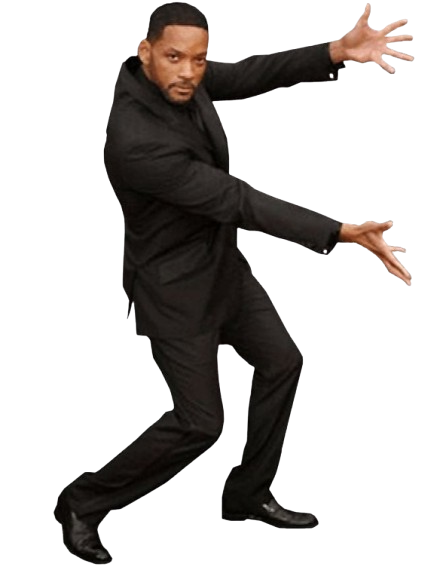
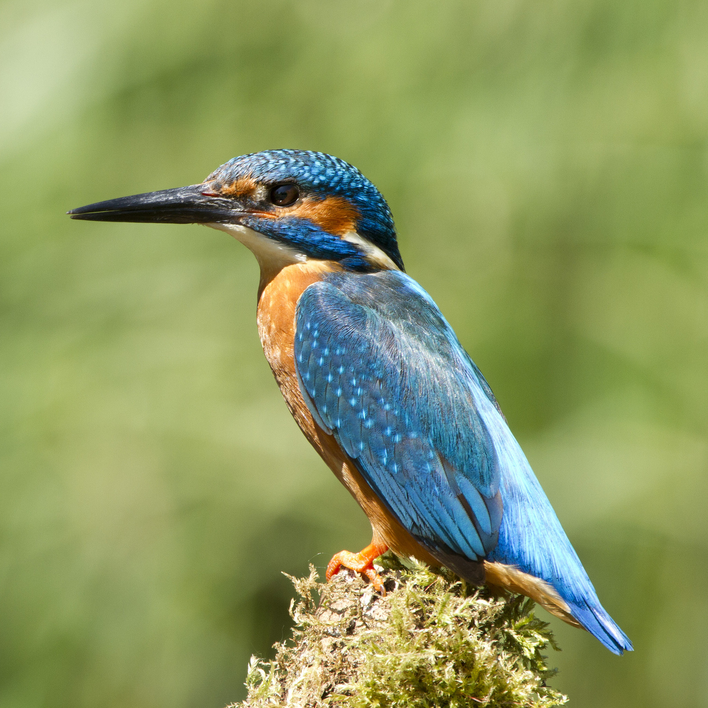
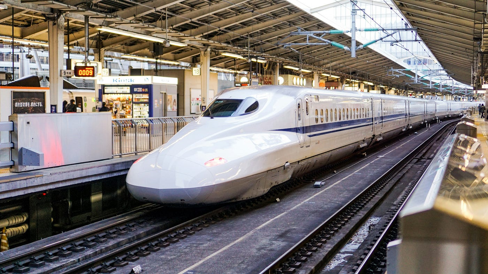
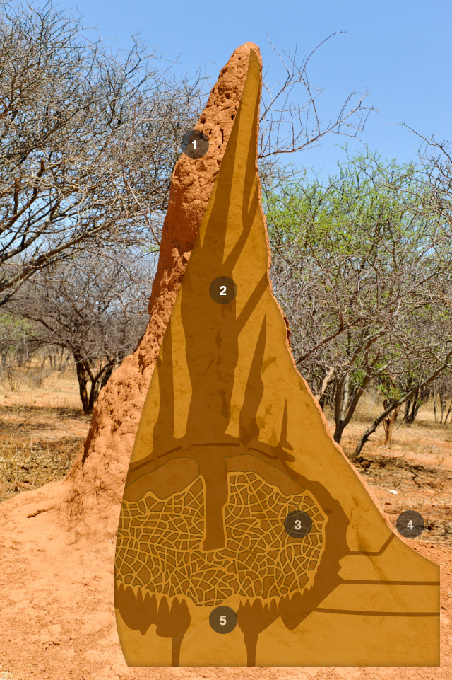
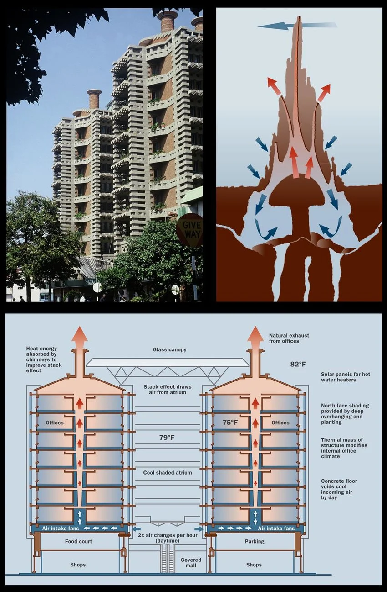
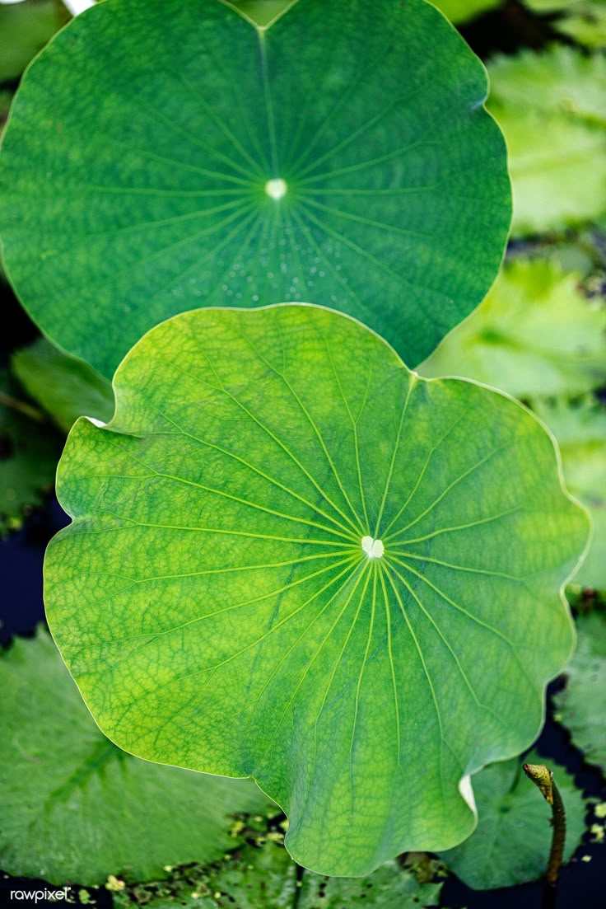
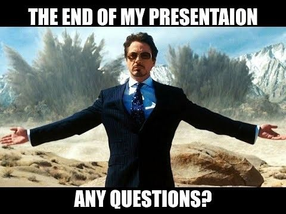

Click anywhere or press Esc to close
Preview
Whenever engineers run into design bottlenecks, we spend years testing solutions on computers. Nature has already run trillions of real-world trials through evolution—and the organisms around us are the working blueprints.

When Japan first tested its 500-Series bullet train at 300 km/h, it pushed a wall of air down mountain tunnels, creating a loud sonic boom upon exit. The fix didn't come from aerospace labs—it came from an engineer who noticed how kingfishers dive from air into water without a splash.

A slender, wedge-shaped beak lets the bird plunge into water without disturbing the surface.

Borrowing the bird's profile allowed air to part smoothly, turning explosive tunnel noise into quiet passage.
In Zimbabwe, outside temperatures fluctuate from cold nights to 40°C afternoons. Yet African termites maintain their mounds at an even 31°C year-round. Architect Mick Pearce applied their chimney ventilation structure to build a commercial complex with zero traditional AC units.

Soil tunnels act like lungs—taking in crisp night air and releasing heat as internal temperatures rise.

Fans pull night air into concrete floors, keeping offices comfortable with zero conventional chillers.
Lotus leaves grow in muddy waters, yet remain spotless. The leaf relies on microscopic waxy bumps that keep droplets floating on air pockets. As water rolls away, it picks up dirt particles without needing chemical soap.

Microscopic peaks trap air pockets so water cannot spread out or stick to the cuticle.
Self-cleaning solar panels, building glass, and bacteria-resistant medical equipment.
Instead of using brute force, effective engineering copies how nature works with physical constraints.
Aerodynamic geometry handles fluid resistance far more efficiently than adding more engine horsepower.
Using natural temperature differentials and thermal mass removes the need for round-the-clock compressor use.
Physical surface patterns reject dirt and bacteria passively without relying on toxic chemicals.
